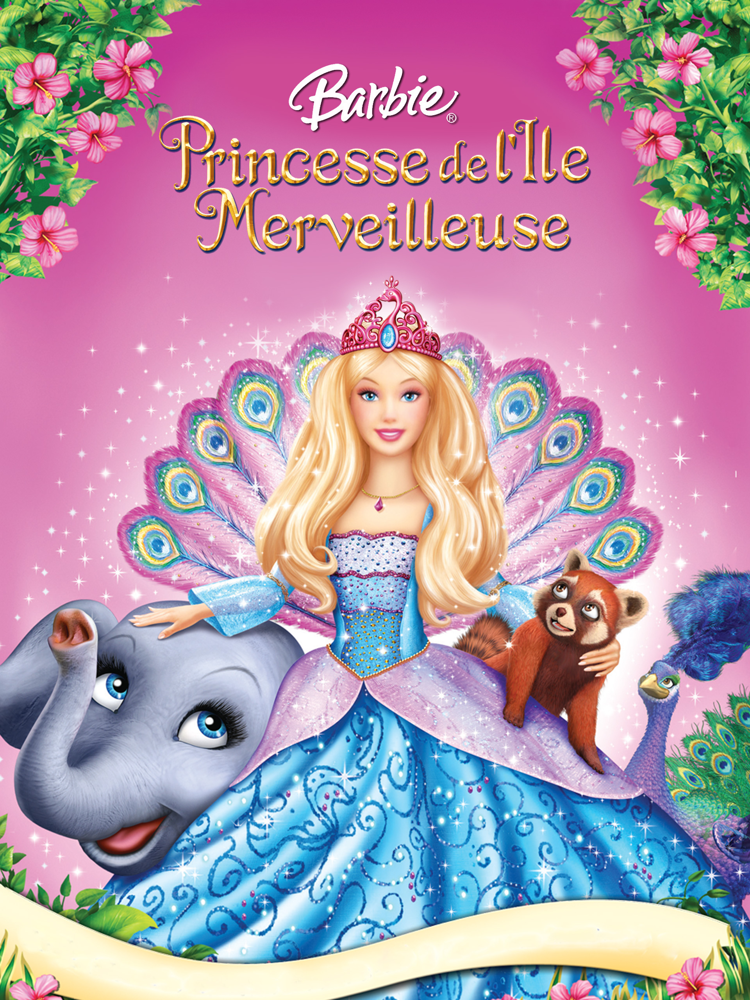
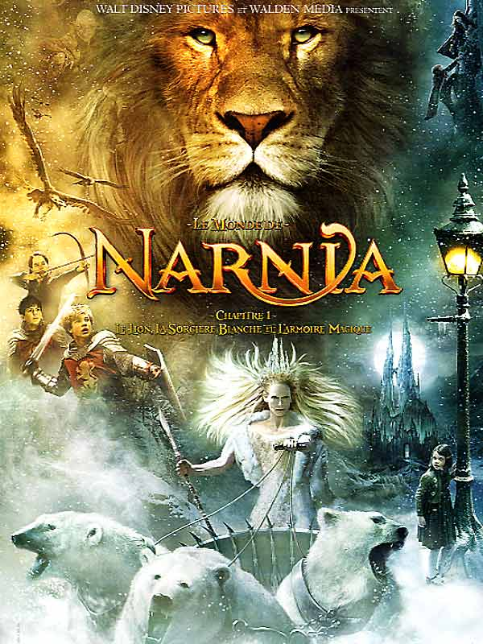

Le Comte de Monte Cristo
Un homme emprisonné injustement s'échappe et entreprend une quête de vengeance.

Barbie Princesse de l'Île Merveilleuse
Barbie découvre ses origines royales en s'aventurant dans une île mystérieuse.

Le Monde de Narnia : Chapitre 1
Quatre enfants découvrent un monde magique et luttent pour le sauver.
Harry Potter
Un jeune sorcier découvre son destin et son combat contre le mal.